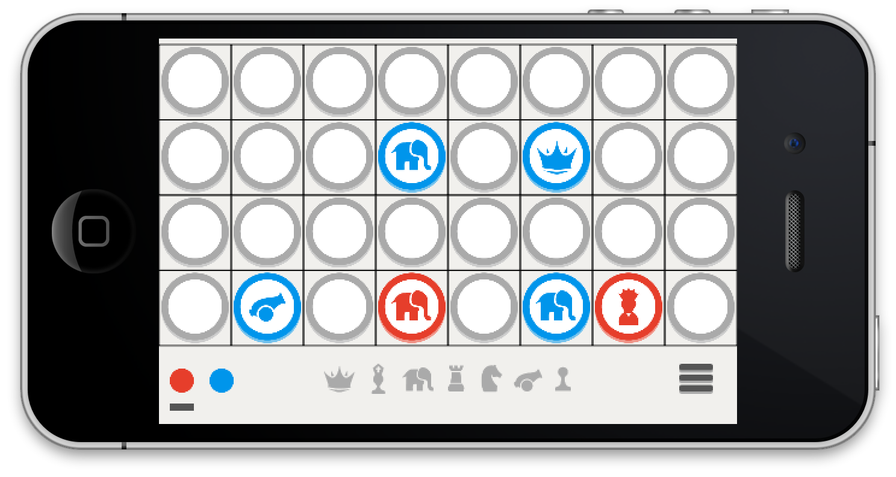

©2013 Secret Chess Inc.
When I was 8, my dad tried to teach me Chinese Chess, but it was too complicated. So instead, he taught me an easier version and I loved it! Today, through the magic of iOS, we bring you this Chinese Chess variant: Secret Chess (aka Banqi in China).
tl;dr - Watch this 5 minute video tutorial. Like SJ said, nobody reads anymore, right?
The game works in these modes right now:
There are 2 colors, Blue and Red. The color indicator in the bottom left corner shows whose turn it is. The 7 chess pieces shown here are just for reference - beginning players can use this to check how powerful each piece is. They are not part of the actual game.
On your turn, you can either tap an "upside down" piece to turn it up, or you can move a piece of your color 1 space horizontally or vertically. At the start of the game, all pieces are upside down. Note that you might tap an upside down piece and turn up the opponent's piece - that still counts as your turn.
Here's an overview of the pieces, from strongest to weakest:
Stronger pieces can capture weaker pieces, generally. That is, the General can capture the Advisor, because the General is stronger; and similarly, the Chariot can capture the Solider, and so on. A piece is captured by simply moving your piece on top of the opponent's piece, which has to be 1 space away (except for a special case explained below).
The objective of the game is to capture ALL of the opponent's pieces. Whoever does that first wins the game.
There are 2 exceptions to the rules above, which keep the game more interesting:
Here's an example situation where the Blue Cannon can jump to the right and capture the Red Elephant.
That's it - see, it's simple - have fun, and please send us feedback!
Julie M - Tech Lead, Software Engineer
Ray Sun - Product Manager, Software Engineer
Connor Sun - Quality Assurance
David Pan - Creative Director, Designer
Karen O'Reilly - Localization
Nancy Goodman - Tech Support
"P.S. If you find any bugs, please let us know. Thanks!" - from Connor Sun
Version 0.11 build
$$build$$